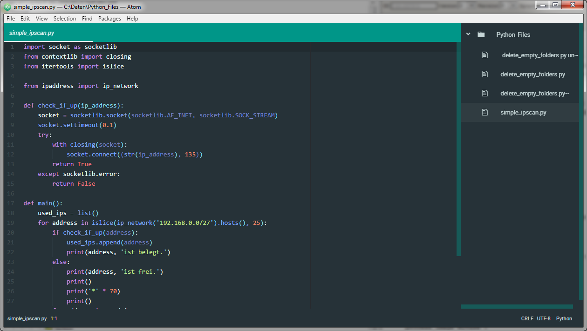

Erste Schritte mit Atom Veröffentlicht am 17.01.2017 - tags: atom Heute habe ich angefangen, mit dem Editor Atom zu arbeiten und zu schauen, ob dieser meinen bisherigen Editor (VIM) ablösen kann. Atom ist ein von GitHub entwickelter, konfigurier- und erweiterbarer Texteditor, der unter der MIT-Lizenz steht. Atom basiert auf Electron und orientiert sich an anderen mächtigen Editoren wie Sublime Text. Funktionsübersicht: Syntaxhervorhebung für viele Sprachen, über Packages erweiterbar Code-Schnipsel-Verwaltung Auto-Vervollständigung große Anpassbarkeit durch eine Vielzahl an Erweiterungen und Themen Git-Anbindung  Guter Artikel mit hilfreichen Tips und Tricks Getting started with the Atom Editor. Bisher bin ich sehr angetan von dem Editor, mal schauen wie sich das so weiter entwickelt.